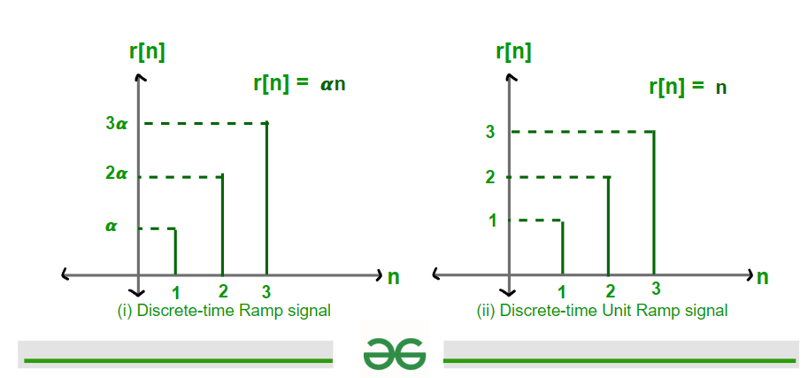

Time-domain analysis involves evaluating how control systems behave over time using differential equations, input signals, and standard test functions.
🔹 Standard Test Signals
Unit Step Function (u(t)) – tests steady-state behavior.
Impulse Function (δ(t)) – tests initial response.
Ramp Function (r(t) = t) – tests tracking performance.

Fig: Common input signals for evaluating time-domain performance.
📈 Time Response of Systems
Transient Response: Response before reaching steady state.
Steady-State Response: Final value as t → ∞.
📊 Key Time-Domain Metrics
Rise Time (tr): Time to rise from 10% to 90% of final value.
Peak Time (tp): Time to reach first peak.
Maximum Overshoot (Mp): Amount exceeded beyond steady value.
Settling Time (ts): Time to remain within 2% of final value.
Steady-State Error (ess): Final error between input and output.